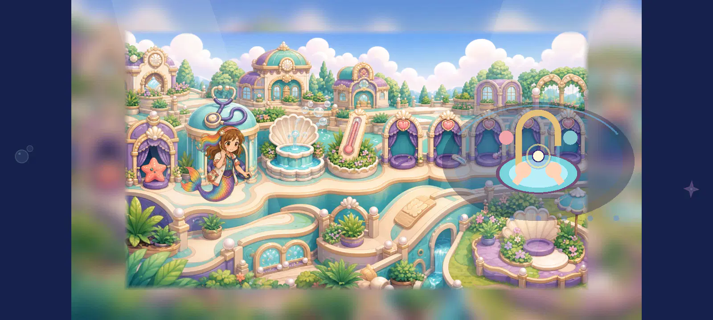

Preserved first26 failed placementsDoctor washing: all18 layered placements reviewed
Connected hands are visible, but every tested placement remains below the4.5 contact floor. Bringing the basin closer and demonstrating water/soap/clean causality remain necessary. Every exact native view has an individual written evaluation below.
Individual scores and geometry · Unchanged-source process receipt · Capture hashes
Static fixture after real viewport approach; world activity stopped and current actor/task overlays hidden only for test. No shipping binding, animation, reward, device/child/owner or cinematic acceptance.
DOCTOR-SINK-A02-00
doctor_1280_original.webp · 1280 × 720
Static contact 2.3/5 · composition 2.9/5
The current actor uses a medical-tool pose at the left station. Separate schematic hands and a large flat basin remain on the right. This width retains the measured spatial and style mismatch. This static capture does not audit the complete original sequence.
DOCTOR-SINK-A02-01
doctor_1280_key0_sink150_offset35.webp · 1280 × 720
Static contact 4.0/5 · composition 4.1/5
Drawing the same sink behind Roshan and its original front cabinet region in front keeps her face, arms and attached soap cluster visible. The hands remain left of the faucet/basin centre; no stream connects them to water. The cabinet occludes much of the tail and appears suspended in the busy station composition. The nearer35px offset improves the local work reading but does not establish contact. The 150.0px sink is a static test using unchanged source pixels; there is no accepted wet/rub/rinse/clean/return sequence.
DOCTOR-SINK-A02-02
doctor_1280_key0_sink150_offset55.webp · 1280 × 720
Static contact 3.7/5 · composition 4.1/5
Drawing the same sink behind Roshan and its original front cabinet region in front keeps her face, arms and attached soap cluster visible. The hands remain left of the faucet/basin centre; no stream connects them to water. The cabinet occludes much of the tail and appears suspended in the busy station composition. The55px offset increases the hand-to-faucet gap and weakens the washing reading. The 150.0px sink is a static test using unchanged source pixels; there is no accepted wet/rub/rinse/clean/return sequence.
DOCTOR-SINK-A02-03
doctor_1280_key0_sink180_offset35.webp · 1280 × 720
Static contact 4.0/5 · composition 4.0/5
Drawing the same sink behind Roshan and its original front cabinet region in front keeps her face, arms and attached soap cluster visible. The hands remain left of the faucet/basin centre; no stream connects them to water. The cabinet occludes much of the tail and appears suspended in the busy station composition. The nearer35px offset improves the local work reading but does not establish contact. The 180.0px sink is a static test using unchanged source pixels; there is no accepted wet/rub/rinse/clean/return sequence.
DOCTOR-SINK-A02-04
doctor_1280_key0_sink180_offset55.webp · 1280 × 720
Static contact 3.7/5 · composition 4.0/5
Drawing the same sink behind Roshan and its original front cabinet region in front keeps her face, arms and attached soap cluster visible. The hands remain left of the faucet/basin centre; no stream connects them to water. The cabinet occludes much of the tail and appears suspended in the busy station composition. The55px offset increases the hand-to-faucet gap and weakens the washing reading. The 180.0px sink is a static test using unchanged source pixels; there is no accepted wet/rub/rinse/clean/return sequence.
DOCTOR-SINK-A02-05
doctor_1280_key1_sink150_offset35.webp · 1280 × 720
Static contact 4.0/5 · composition 4.1/5
Drawing the same sink behind Roshan and its original front cabinet region in front keeps her face, arms and attached soap cluster visible. The hands remain left of the faucet/basin centre; no stream connects them to water. The cabinet occludes much of the tail and appears suspended in the busy station composition. The nearer35px offset improves the local work reading but does not establish contact. The 150.0px sink is a static test using unchanged source pixels; there is no accepted wet/rub/rinse/clean/return sequence.
DOCTOR-SINK-A02-06
doctor_1280_key1_sink150_offset55.webp · 1280 × 720
Static contact 3.7/5 · composition 4.1/5
Drawing the same sink behind Roshan and its original front cabinet region in front keeps her face, arms and attached soap cluster visible. The hands remain left of the faucet/basin centre; no stream connects them to water. The cabinet occludes much of the tail and appears suspended in the busy station composition. The55px offset increases the hand-to-faucet gap and weakens the washing reading. The 150.0px sink is a static test using unchanged source pixels; there is no accepted wet/rub/rinse/clean/return sequence.
DOCTOR-SINK-A02-07
doctor_1280_key1_sink180_offset35.webp · 1280 × 720
Static contact 4.0/5 · composition 4.0/5
Drawing the same sink behind Roshan and its original front cabinet region in front keeps her face, arms and attached soap cluster visible. The hands remain left of the faucet/basin centre; no stream connects them to water. The cabinet occludes much of the tail and appears suspended in the busy station composition. The nearer35px offset improves the local work reading but does not establish contact. The 180.0px sink is a static test using unchanged source pixels; there is no accepted wet/rub/rinse/clean/return sequence.
DOCTOR-SINK-A02-08
doctor_1280_key1_sink180_offset55.webp · 1280 × 720
Static contact 3.7/5 · composition 4.0/5
Drawing the same sink behind Roshan and its original front cabinet region in front keeps her face, arms and attached soap cluster visible. The hands remain left of the faucet/basin centre; no stream connects them to water. The cabinet occludes much of the tail and appears suspended in the busy station composition. The55px offset increases the hand-to-faucet gap and weakens the washing reading. The 180.0px sink is a static test using unchanged source pixels; there is no accepted wet/rub/rinse/clean/return sequence.
DOCTOR-SINK-A02-09
doctor_1600_original.webp · 1600 × 720
Static contact 2.3/5 · composition 2.9/5

The current actor uses a medical-tool pose at the left station. Separate schematic hands and a large flat basin remain on the right. This width retains the measured spatial and style mismatch. This static capture does not audit the complete original sequence.
DOCTOR-SINK-A02-10
doctor_1600_key0_sink150_offset35.webp · 1600 × 720
Static contact 4.0/5 · composition 4.1/5
Drawing the same sink behind Roshan and its original front cabinet region in front keeps her face, arms and attached soap cluster visible. The hands remain left of the faucet/basin centre; no stream connects them to water. The cabinet occludes much of the tail and appears suspended in the busy station composition. The nearer35px offset improves the local work reading but does not establish contact. The 150.0px sink is a static test using unchanged source pixels; there is no accepted wet/rub/rinse/clean/return sequence.
DOCTOR-SINK-A02-11
doctor_1600_key0_sink150_offset55.webp · 1600 × 720
Static contact 3.7/5 · composition 4.1/5
Drawing the same sink behind Roshan and its original front cabinet region in front keeps her face, arms and attached soap cluster visible. The hands remain left of the faucet/basin centre; no stream connects them to water. The cabinet occludes much of the tail and appears suspended in the busy station composition. The55px offset increases the hand-to-faucet gap and weakens the washing reading. The 150.0px sink is a static test using unchanged source pixels; there is no accepted wet/rub/rinse/clean/return sequence.
DOCTOR-SINK-A02-12
doctor_1600_key0_sink180_offset35.webp · 1600 × 720
Static contact 4.0/5 · composition 4.0/5
Drawing the same sink behind Roshan and its original front cabinet region in front keeps her face, arms and attached soap cluster visible. The hands remain left of the faucet/basin centre; no stream connects them to water. The cabinet occludes much of the tail and appears suspended in the busy station composition. The nearer35px offset improves the local work reading but does not establish contact. The 180.0px sink is a static test using unchanged source pixels; there is no accepted wet/rub/rinse/clean/return sequence.
DOCTOR-SINK-A02-13
doctor_1600_key0_sink180_offset55.webp · 1600 × 720
Static contact 3.7/5 · composition 4.0/5
Drawing the same sink behind Roshan and its original front cabinet region in front keeps her face, arms and attached soap cluster visible. The hands remain left of the faucet/basin centre; no stream connects them to water. The cabinet occludes much of the tail and appears suspended in the busy station composition. The55px offset increases the hand-to-faucet gap and weakens the washing reading. The 180.0px sink is a static test using unchanged source pixels; there is no accepted wet/rub/rinse/clean/return sequence.
DOCTOR-SINK-A02-14
doctor_1600_key1_sink150_offset35.webp · 1600 × 720
Static contact 4.0/5 · composition 4.1/5
Drawing the same sink behind Roshan and its original front cabinet region in front keeps her face, arms and attached soap cluster visible. The hands remain left of the faucet/basin centre; no stream connects them to water. The cabinet occludes much of the tail and appears suspended in the busy station composition. The nearer35px offset improves the local work reading but does not establish contact. The 150.0px sink is a static test using unchanged source pixels; there is no accepted wet/rub/rinse/clean/return sequence.
DOCTOR-SINK-A02-15
doctor_1600_key1_sink150_offset55.webp · 1600 × 720
Static contact 3.7/5 · composition 4.1/5
Drawing the same sink behind Roshan and its original front cabinet region in front keeps her face, arms and attached soap cluster visible. The hands remain left of the faucet/basin centre; no stream connects them to water. The cabinet occludes much of the tail and appears suspended in the busy station composition. The55px offset increases the hand-to-faucet gap and weakens the washing reading. The 150.0px sink is a static test using unchanged source pixels; there is no accepted wet/rub/rinse/clean/return sequence.
DOCTOR-SINK-A02-16
doctor_1600_key1_sink180_offset35.webp · 1600 × 720
Static contact 4.0/5 · composition 4.0/5
Drawing the same sink behind Roshan and its original front cabinet region in front keeps her face, arms and attached soap cluster visible. The hands remain left of the faucet/basin centre; no stream connects them to water. The cabinet occludes much of the tail and appears suspended in the busy station composition. The nearer35px offset improves the local work reading but does not establish contact. The 180.0px sink is a static test using unchanged source pixels; there is no accepted wet/rub/rinse/clean/return sequence.
DOCTOR-SINK-A02-17
doctor_1600_key1_sink180_offset55.webp · 1600 × 720
Static contact 3.7/5 · composition 4.0/5
Drawing the same sink behind Roshan and its original front cabinet region in front keeps her face, arms and attached soap cluster visible. The hands remain left of the faucet/basin centre; no stream connects them to water. The cabinet occludes much of the tail and appears suspended in the busy station composition. The55px offset increases the hand-to-faucet gap and weakens the washing reading. The 180.0px sink is a static test using unchanged source pixels; there is no accepted wet/rub/rinse/clean/return sequence.